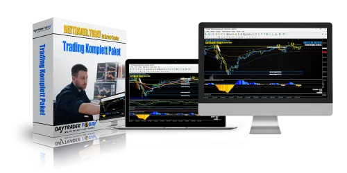
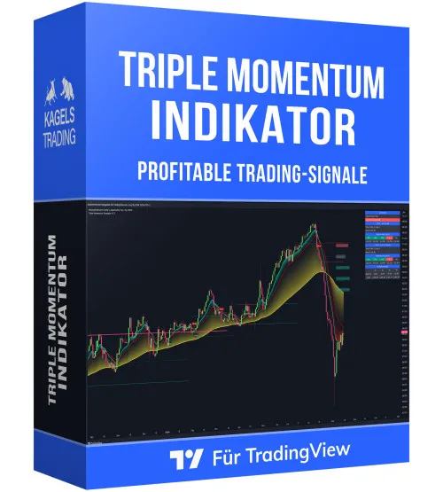
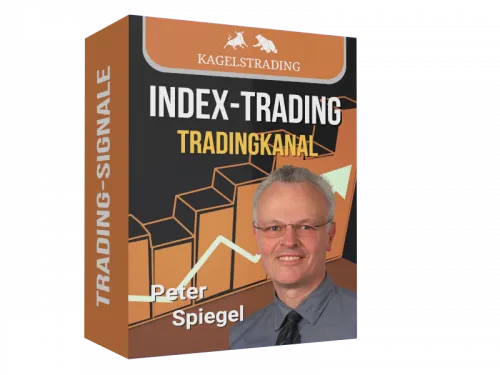
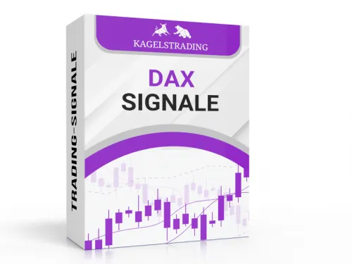
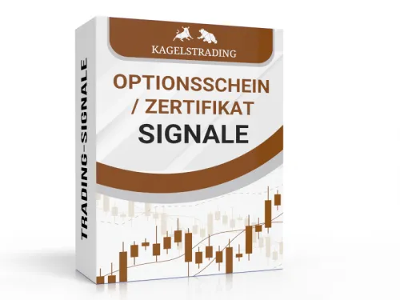
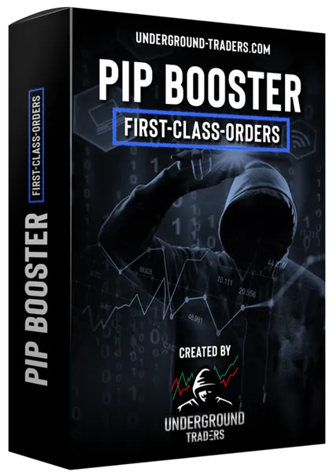
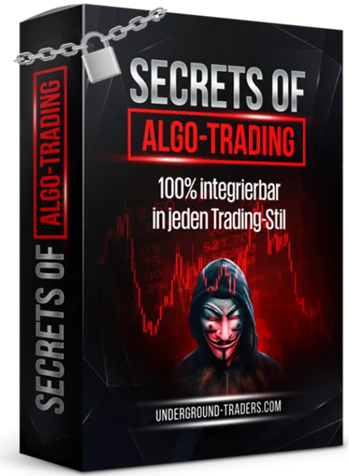

Forex Trading Signale (Major + Minors)
Produktprofil · Marktplatz-Daten 2026-10-14 · Verkaufsseiten-Recherche 2026-10-14 · Kategorien: Trading Products
- Forex Trading Signale (Major + Minors) ist ein/e Elektronische Dienstleistung in Trading Products, vertrieben über den Digistore24-Marktplatz von Anbieter kagels-trading, gelistet seit 2015-08-08.
- Listenpreis $451.28 (subscription) — Checkout, Auslieferung und Rückerstattungen laufen über Digistore24 selbst, nicht über den Anbieter.
- Käuferschutz: keine standardisierte Garantie-Formulierung gefunden — Rückerstattungsbedingungen vor der Zahlung auf der offiziellen Seite prüfen.
Interesse an Forex Trading Signale (Major + Minors)? Aktueller Preis, Boni und Garantiebedingungen finden Sie auf der offiziellen Seite des Anbieters:
Offizielle Verkaufsseite ansehen
Affiliate-Link (Werbung) — wir verdienen ggf. eine Provision, ohne Mehrkosten für Sie.

Marktplatz-Daten
| Produkttyp | Elektronische Dienstleistung |
|---|---|
| Preis | $451.28 (Subscription) |
| Garantie/Rückgabe | Laut Verkaufsseite des Anbieters — vor dem Kauf auf der offiziellen Seite prüfen |
| Anbieter | kagels-trading (gelistet seit 2015-08-08) |
Marktplatz-Beschreibung des Anbieters
Sie suchen nach einem Trading-Partnerprogramm, das seriös ist und regelmäßig wiederkehrende Umsätze bringt? Dann haben Sie mit unseren Forex Trading-Signalen (Majors & Minors) genau das richtige gefunden. Unsere professionellen Forex-Signale richten sich an Einsteiger und fortgeschrittene Forex-Trader. Die Forex-Signale werden ausgesucht von dem bekannten Berufs-Trader Karsten Kagels. Einfacher Erstverkauf durch 1 Euro Testangebot! Konditionen für Partner: 15 % Provision als Passiv-Einkommen (monatlich) Lebenslange Provisionszahlungen für die Monatsbeiträge Ihrer geworbenen Kunden Hohe Anmelde- & Teilnehmerquote Hohe Conversion durch 1€-Testmöglichkeit Sehr geringe Stornoquote Bewerben Sie unsere Trading-Produkte jetzt auf Ihrer Webseite, Ihrem Blog oder direkt an Ihre Liste und Sie werden sehen, wie regelmäßig hohe Provisionen in Ihren Account fließen und das Monat für Monat, solange die Abonnenten dabei bleiben. Die Kündigungsrate ist gering.
Von der Verkaufsseite des Anbieters
Seitentitel: Live Forex Signale jetzt 14 Tage für nur 19,90 € testen!
Meta-Beschreibung: Mit echten Forex Signalen Geld verdienen! ► EUR/USD, USD/CHF, GBP/USD, AUD/USD, USD/CAD, USD/JPY ► Jetzt 14 Tage testen.
Hauptüberschrift
Mit Profi Forex-Signalen risikobewusst an der Börse handeln.
Abschnitts-Überschriften
- Warum meine Forex-Signale?
- Forex Signal-Paket mit 24 Währungspaare:
- Transparent – Ehrlich – Profitabel.
- Ich bin Karsten Kagels
- Das sagen meine Kunden.
- Forex-Signale Major und Minor Pairs.
- Meine Forex Signale per E-Mail.
- Hohe Trefferquote und risikobewusste Signale
- Das Forex Trading Signal-Paket.
- FAQ zu meinen Forex Signalen .
Einstiegstext
➤ Präzise Handelsanweisungen : Einfach umsetzbare Signale mit klarer Risikokontrolle
Forex-Trading bietet die Möglichkeit. die Schwankungen am Devisenmarkt auszunutzen. Doch warum kompliziert, wenn es auch einfach geht? Mit meiner Expertise und Erfahrung kannst Du risikobewusst auf interessante Handelsgelegenheiten zugreifen.
Warum? Weil ich die Zeit, das Wissen und die Erfahrung habe. Im Forex-Handel werden immer Währungspaare gehandelt. Es ist wichtig, die Marktteilnehmer und ihre Intentionen zu verstehen, um erfolgreich zu sein.
Überzeuge Dich selbst von der Treffsicherheit meiner Auswahl, indem Du meine Forex-Signale jetzt 14 Tage lang für nur 19,90 € testen kannst. Unverbindlich, transparent und leicht umzusetzen.
Fragen, die die Verkaufsseite beantwortet
- Wer stellt die Forex-Trading-Handelssignale zusammen?
- Für wen sind die Forex-Trading-Handelssignale geeignet?
- Wie werden die Forex-Trading-Handelssignale an die Abonnenten übermittelt?
- Welche Charts werden für die Analyse genommen?
- Welcher Broker kommt infrage?
- Wie hoch sollte das Trading-Kapital sein?
- Welches Risiko kann bei einem Forex-Signal eingegangen werden?
- Wann erhalte ich die Signale?
- Wann werden Positionen über Nacht gehalten?
- Welcher Broker eignet sich für Forex Trading?
Recherche-Methode: rohes HTML · 1519 Wörter · Qualität: rich · recherchiert am 2026-10-14. Vollständige Recherche-Datei (MD) ↗
Wie Produkte dieser Art geliefert werden
Allgemeiner Hinweis zu diesem Produkttyp (keine anbieterspezifische Anleitung): Remote-Dienstleistungen werden elektronisch erbracht — der Anbieter meldet sich nach dem Kauf. Für die genaue Anwendung von Forex Trading Signale (Major + Minors) sind die offizielle Verkaufsseite und die enthaltenen Materialien maßgeblich.
Gut zu wissen
- Hohe Stornoquote: 11.14 % der Käufer stornieren (Kategorie-Median: 0.26 %). Lesen Sie die Kündigungsbedingungen auf der Verkaufsseite, bevor Sie ein Abo eingehen.
- Hoher Preis: $451.28 ist eine erhebliche Ausgabe — prüfen Sie, ob es einen Zahlungsplan gibt, und vergleichen Sie zuerst die günstigeren Alternativen der Kategorie.
- Keine Garantie-Formulierung in unserer Recherche gefunden — bestätigen Sie das Rückgabefenster auf der offiziellen Seite, bevor Sie kaufen.
Was ist Forex Trading Signale (Major + Minors)?
Forex Trading Signale (Major + Minors) ist ein/e elektronische dienstleistung in der Kategorie Handelsprodukte des Digistore24-Marktplatzes, veröffentlicht von Anbieter kagels-trading und im Verkauf seit 2015-08-08. Der Anbieter beschreibt es so: "Sie suchen nach einem Trading-Partnerprogramm, das seriös ist und regelmäßig wiederkehrende Umsätze bringt? Dann haben Sie mit unseren Forex Trading-Signalen (Majors & Minors) genau das richtige gefunden. Unsere professionellen Forex-Signale richten sich an Ei" (Marktplatz-Beschreibung des Anbieters, leicht gekürzt).
Forex Trading Signale (Major + Minors) Preis: was Sie zahlen
Der Marktplatz listet Forex Trading Signale (Major + Minors) zum $451.28 Preis (subscription). Digistore24 fügt im Checkout die gesetzliche Steuer Ihres Landes hinzu — dort sehen Sie den Endbetrag vor der Zahlung. Eine separate Plattformgebühr gibt es nicht; Anbieter können eigene Upsells nach dem Checkout anbieten.
Forex Trading Signale (Major + Minors) Rückerstattung und Geld-zurück-Garantie
Wir haben keine standardisierte Garantie-Formulierung auf der Verkaufsseite gefunden. Rückerstattungen für Digistore24-Käufe laufen über die Plattform: Antrag über den Support-Link in Ihrer Bestell-E-Mail, innerhalb des Garantiezeitfensters, das im Checkout angezeigt wird. Praktischer Rat: Entscheiden Sie innerhalb des Fensters — wenn das Produkt unter den Erwartungen bleibt, erstatten lassen statt irren lassen.
Mechanik im Detail: So funktionieren Digistore24-Rückerstattungen.
Für wen ist Forex Trading Signale (Major + Minors) geeignet?
Basierend auf der Handelsprodukte-Einordnung und der subscription-Abrechnung richtet sich Forex Trading Signale (Major + Minors) an Käufer, die handelsprodukte-Lösungen suchen und ein Budget für einen Premium-Kauf eingeplant haben. Der ehrliche Test ist nicht die Kategorie, sondern Ihre eigene Situation: Werden Sie es realistisch innerhalb des Garantiefensters nutzen? Wenn ja, ist der Preis eine Investition; wenn nein, ist er Ballast — unabhängig von der Qualität.
Ist Forex Trading Signale (Major + Minors) seriös? Was Sie vor dem Kauf prüfen
Wir bewerten keine Seriosität — das kann niemand, ohne das Produkt zu nutzen. Prüfbare Punkte, alle auf dieser Seite: die Marktplatz-Historie des Anbieters (im Verkauf seit 2015-08-08), die wörtlichen Verkaufsseiten-Auszüge unten (gekennzeichnet als Anbieteraussagen — deren Werbung, nicht unsere Empfehlung), die Garantiebedingungen im Checkout und die Auslieferungsart. Vorsichtsignale bei jedem Angebot: Countdown-Dringlichkeit gepaart mit vagen Rückerstattungsbedingungen, Testimonials ohne Datum und Anbieterseiten, die den Preis bis zum Checkout verstecken.
Wie kommen Sie nach dem Kauf an Forex Trading Signale (Major + Minors)?
Der Checkout läuft über Digistore24. Nach der Zahlung: Remote-Dienstleistungen werden elektronisch erbracht — der Anbieter meldet sich nach dem Kauf. Bewahren Sie die Bestell-E-Mail auf — sie ist Ihr Schlüssel zum/d zur elektronische dienstleistung, zu Rückerstattungsanträgen und zum Digistore24-Käufersupport.
Forex Trading Signale (Major + Minors) Erfahrungen: so recherchieren Sie richtig
Die meisten „Erfahrungsberichte" zu Marktplatz-Produkten sind Affiliate-Inhalte — einschließlich Seiten wie dieser, die an Käufen mitverdienen. Behandeln Sie jeden Bericht (auch unseren) als Ausgangspunkt und prüfen Sie gegen Primärquellen: die Verkaufsseite des Anbieters, die Digistore24-Rückerstattungsrichtlinie und — für handelsprodukte — unabhängige Communities außerhalb des Affiliate-Ökosystems. Auf dieser Seite sind die Verkaufsseiten-Auszüge unten wörtlich zitiert, damit Sie die Aussagen des Anbieters bewerten können, ohne wegzuklicken.
Wie Sie Forex Trading Signale (Major + Minors) sicher kaufen
- Öffnen Sie die offizielle Verkaufsseite und lesen Sie das vollständige Angebot.
- Bestätigen Sie Endpreis und Garantiezeitfenster auf der Digistore24-Kassenseite — sie ist bindend, kein Vergleichsportal.
- Zahlen Sie innerhalb des Digistore24-Checkouts (niemals per Überweisung oder Off-Platform-Links).
- Speichern Sie die Bestellbestätigung; notieren Sie die Rückerstattungsfrist im Kalender.
- Prüfen Sie zügig. Der Digistore24-Käufersupport hilft, wenn der Anbieter nicht reagiert.
Vollständiges Recherche-Archiv für dieses Produkt (Markdown: kompletter Marktplatz-Datensatz + wörtliche Verkaufsseiten-Auszüge): Forex Trading Signale (Major + Minors) — vollständiges Datenarchiv (Markdown-Datei: 42280-forex-trading-signale-major-minors.md).
- Listenpreis & Abrechnung — Quelle: offizielle Digistore24-Marktplatz-API, Stand 2026-10-14. Maßgeblich für den aktuellen Preis ist immer die Kassenseite.
- Verkaufsseiten-Zitate — Quelle: https://www.kagels-trading.de/trading-signale/forex-signale/, abgerufen 2026-10-14 (Methode: rohes HTML). Verify: offizielle Seite öffnen.
- Garantie / Rückgabe — vom Anbieter festgelegt; vor dem Kauf auf der Verkaufsseite bestätigen.
- Nicht von uns geprüft: Produktqualität, Ergebnisse, Testimonials — kein Praxistest für dieses Listing durchgeführt.
Häufige Fragen zu Forex Trading Signale (Major + Minors)
Antworten aus dem Marktplatz-Snapshot (2026-10-14) und der Verkaufsseiten-Recherche (2026-10-14); Anbieteraussagen sind inline gekennzeichnet.
Was ist Forex Trading Signale (Major + Minors)?
Forex Trading Signale (Major + Minors) ist ein Angebot des Typs „Elektronische Dienstleistung" im Digistore24-Marktplatz, Anbieter: kagels-trading, gelistet seit 2015-08-08. Eingepflegt unter Handelsprodukte. Digistore24 wickelt Checkout, Lieferung und Rückgaben ab.
Wie viel kostet Forex Trading Signale (Major + Minors)?
Der Digistore24-Marktplatz listet es für $451.28 (subscription). Preise legt der Anbieter fest und können sich ändern — der Marktplatz-Eintrag oben zeigt den Schnappschuss; die offizielle Verkaufsseite zeigt den aktuellen Preis.
Gibt es eine Geld-zurück-Garantie für Forex Trading Signale (Major + Minors)?
Unsere Verkaufsseiten-Recherche hat keine explizite Garantie-Formulierung gefunden. Viele Digistore24-Produkte bieten 60 Tage Geld-zurück, aber das legt jeder Anbieter selbst fest — bestätigen Sie es auf der offiziellen Verkaufsseite, bevor Sie kaufen.
Ist Forex Trading Signale (Major + Minors) seriös?
Wir bewerten keine Seriosität — wir veröffentlichen überprüfbare Zahlen: Anbieter kagels-trading (gelistet seit 2015-08-08), mit der vollständigen Verkaufsseiten-Recherche archiviert auf dieser Seite (Anbieteraussagen als solche gekennzeichnet). Lesen Sie unsere 6-Punkte-Bewertungsmethode und entscheiden Sie anhand der Zahlen — oder diskutieren Sie Forex Trading Signale (Major + Minors) auf GitHub.
Wo kann ich Forex Trading Signale (Major + Minors) sicher kaufen?
Nur über die offizielle Verkaufsseite, die auf dieser Seite verlinkt ist (Checkout und Rückgaben laufen über Digistore24). Prüfen Sie dort Preis und Garantie vor der Bestellung. Der Link ist ein Affiliate-Link — der Kauf unterstützt diese Website ohne Mehrkosten für Sie.
Wie erhalte ich Forex Trading Signale (Major + Minors) nach der Zahlung?
Der Checkout läuft über Digistore24: Nach der Zahlung erhalten Sie Zugangsdaten und Ihr Abo-Dashboard. Lieferdetails für diesen Produkttyp: Remote-Dienstleistungen werden elektronisch erbracht — der Anbieter meldet sich nach dem Kauf. Bei Problemen kann der Digistore24-Käufersupport Ihre Bestellung wiederherstellen.
Alle 50 Käuferfragen zu Handelsprodukte — das komplette Kategorie-FAQ.
Forex Trading Signale (Major + Minors) auf Reddit diskutieren
In Community-Threads vergleichen echte Käufer Erfahrungen. Wir verlinken Communities, keine einzelnen Posts — Threads verschwinden, Subreddits bleiben:
- r/Finanzen — deutschsprachige Community mit Diskussionen zu trading products.
- Reddit-Suche nach „Forex Trading Signale (Major + Minors)" — Live-Ergebnisse, von uns nicht beeinflusst.
- Top-„Erfahrungs"-Treffer dieses Jahr — selbst nach Aktualität filtern.
Passendes auf Amazon.de
Physische Produkte und Zubehör, die häufig zusammen mit Forex Trading Signale (Major + Minors) gekauft werden:
- Investieren Bücher auf Amazon.de — Top-Ergebnisse, Amazon-Ranking.
- Bestseller: Investieren Bücher — live Liste von Amazon, von uns nicht kuratiert.
Werbung: Als Amazon-Partner verdient DigistorePicks DE an qualifizierten Käufen (Partner-tag adminstorede-21). Amazon setzt eigene Preise und Provisionen (niedrige einstellige Prozente — weit unter den 30–75% der Digistore24-Anbieter). Amazon ist ein Convenience-Angebot für Sachprodukte, kein Ersatz für das digitale Produkt oben.
Ähnliche Angebote in Handelsprodukte

Unsere Plattform Affiliateking.net – nutze sie, um zusätzlich zu den Provisionen saftige Zusatzeinnahmen zu kassieren. Hier direkt zur Partnerseite + Werbemitte

Bundle aus mehreren Produkten zum Thema sichere Optionsstrategien. Als Affiliate bewirbst Du ein zentrales Thema – der Kunde durchläuft einen mehrstufigen Conve
TOP-Dauereinkommen! DIE Ausbildung zur Neuen Geldordnung (NGO) und zum Krypto-Handel für den Master - Gewinn am Krypto-Markt. Deine Vorteile als Affiliate: hoch

Vermittle die aktuell schnellste & sicherste (Day)Trader Ausbildung, die im deutschsprachigen Raum angeboten wird. Extrem hohe Nachfrage! Darum wählen unser
Weitere Angebote von kagels-trading
Gesamtes Sortiment: kagels-trading Anbieter-Hub — alle Listings mit Marktplatz-Daten.

Möchtest du mit dem Triple Momentum Indikator wiederkehrende Einnahmen erzielen? Mit unserem Partnerprogramm ist das ganz einfach! Du verdienst nicht nur einmal

Sie suchen nach einem Trading-Partnerprogramm, das seriös ist und regelmäßig wiederkehrende Umsätze bringt? Dann haben Sie mit unseren Aktien-Index Daytrading S

Sie suchen nach einem Trading-Partnerprogramm, das seriös ist und regelmäßig wiederkehrende Umsätze bringt? Dann haben Sie mit unseren DAX-Index Trading Signale

Sie suchen nach einem Trading-Partnerprogramm, das seriös ist und regelmäßig wiederkehrende Umsätze bringt? Dann haben Sie mit unseren Optionsscheinen & Zer
Ähnliche Preislage in Handelsprodukte

Du willst endlich ein stabiles Einkommen als Affiliate ? Das Problem bei den meisten Affiliate-Programmen ist, dass diese Partnerprogramme mittlerweile total üb

SECRETS OF ALGO-TRADING Das ultimative Komplettpaket für alle Trader, die Algo-Trading von Grund auf richtig erlernen möchten! informative LANDINGPAGE https://u
StereoTrader MT4 - hochprofessionelle Lösung für den IntradayHandel von CFDs und Forex (MetaTrader basiert) Zur Word of Trading in Frankfurt in 2016 zum ersten

Lerne, wie du als Einsteiger ohne Vorwissen erfolgreich deine ersten Trades umsetzt, mit klaren Strategien, wenig Zeitaufwand und voller Kontrolle über dein Ris
Ähnliche Suchanfragen
Wo Sie es sich ansehen können
Wo Sie es sich ansehen können
Aktuelle Preise, Garantie und Boni finden Sie auf der offiziellen Verkaufsseite:
Offizielle Verkaufsseite ansehen
Das ist ein Affiliate-Link (Werbung) — kaufen Sie darüber, verdienen wir ggf. eine Provision, ohne Mehrkosten für Sie.
Quellen & weiterführende Informationen
- Offizielle Verkaufsseite (aktueller Preis, Garantie, Boni): www.kagels-trading.de/trading-signale/forex-signale/ (Affiliate-Link)
- Öffentliche Digistore24-Produktseite: checkout-ds24.com/product/56109
- Vollständige Recherche-Datei (Markdown, versioniert): content/products/42280-forex-trading-signale-major-minors.md
- Affiliate-Supportseite des Anbieters: www.kagels-trading.de/affiliate-registrierung/
- Marktplatz-Kategorie: Handelsprodukte
Wie wir Produkte wie Forex Trading Signale (Major + Minors) bewerten
Sechs Prüfungen, ausschließlich mit offiziellen Marktplatz-Zahlen. Die vollständige Bewertungsmethode lesen · unsere Recherche-Standards & Kennzeichnung.
Fragen oder eigene Erfahrungen mit Forex Trading Signale (Major + Minors)?
Praxis-Tests veröffentlichen wir erst, nachdem wir ein Produkt selbst gekauft haben — aber Ihre Erfahrung hilft anderen Lesern: Diskussion zu Forex Trading Signale (Major + Minors) auf GitHub starten/verfolgen. Falsche Zahl gefunden? Korrektur melden — jede Seite zeigt ihre Datenstände, Korrekturen gelten für die ganze Website.